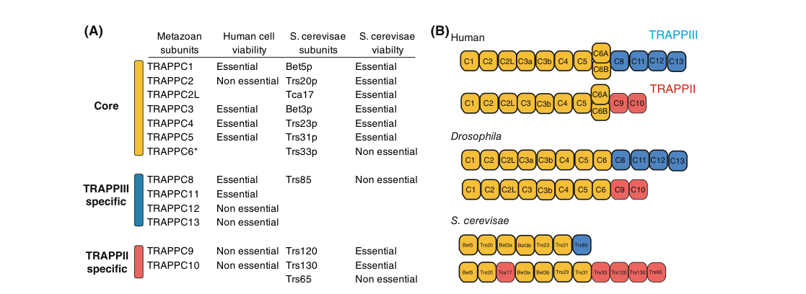

TRAPPC11 (C4orf41/Gryzun) is a metazoan TRAPP/TRAPPIII-associated subunit. It stabilizes mammalian TRAPP architecture and contributes to early secretory pathway trafficking between the ER, ERGIC, and Golgi. Patient-cell evidence also supports a TRAPPC11 role in starvation-induced autophagic flux and autophagosome sealing. As a TRAPPIII-associated subunit, TRAPPC11 is connected to TRAPP complex membership, complex-level RAB1 GEF activity, ER-to-Golgi transport, TRAPP complex stability, and autophagosome maturation.
| GO Term | Evidence | Action | Reason |
|---|---|---|---|
|
GO:0005794
Golgi apparatus
|
IEA
GO_REF:0000044 |
ACCEPT |
Summary: Golgi localization is supported for TRAPPC11/TRAPPIII trafficking biology.
Reason: Accept as a supported cellular location. UniProt maps TRAPPC11 to the Golgi apparatus with PMID:27862579 support, and the CDG abstract reports delayed Golgi vesicular transport caused by TRAPPC11 mutation.
Supporting Evidence:
file:human/TRAPPC11/TRAPPC11-uniprot.txt
Golgi apparatus {ECO:0000269|PubMed:27862579}
PMID:27862579
delayed vesicular transport in the GA due to mutations in TRAPPC11, a subunit of the TRAPPIII complex
PMID:21525244
RNAi against C8, C11, or C12 resulted in Golgi fragmentation
|
|
GO:0005737
cytoplasm
|
NAS
PMID:27066478 TRAPP Complexes in Secretion and Autophagy. |
ACCEPT |
Summary: Cytoplasm is a broad but reasonable location for soluble/peripheral TRAPP complex biology.
Reason: Accept as a broad supported location/context. TRAPP subunits have large soluble pools and function on early secretory pathway membranes; the more specific cytosol/Golgi locations are captured elsewhere.
Supporting Evidence:
PMID:21525244
Localization of subunits by fluorescence microscopy has proven difficult due to the large soluble pools of the proteins
PMID:21525244
TRAPP functions either at ER exit sites or at peripheral ERGIC (BFA-resistant) elements
Reactome:R-HSA-8877475
RAB1 nucleotide exchange is stimulated in these pathways by the GEF activity of the multisubunit TRAPPC complexes II and III
|
|
GO:0006888
endoplasmic reticulum to Golgi vesicle-mediated transport
|
NAS
PMID:27066478 TRAPP Complexes in Secretion and Autophagy. |
ACCEPT |
Summary: TRAPPC11 participates in early secretory ER-to-ERGIC/Golgi transport through TRAPP/TRAPPIII.
Reason: Accept as a core process. TRAPPC11 was identified as a mammalian TRAPP component with C11-specific ER-to-ERGIC traffic evidence, and independent secretory-screen evidence shows human Gryzun/C4orf41 knockdown blocks Golgi exit.
Supporting Evidence:
PMID:21525244
Specifically, we implicate C11 in membrane traffic between the ER and the ERGIC compartment
PMID:21525244
knockdowns of either C11 or C12 arrest a cargo protein in a BFA-resistant compartment
PMID:21525244
TRAPP functions either at ER exit sites or at peripheral ERGIC (BFA-resistant) elements
PMID:19942856
RNAi of human Gryzun (C4orf41) blocks Golgi exit
file:human/TRAPPC11/TRAPPC11-uniprot.txt
Involved in endoplasmic reticulum to Golgi apparatus
Reactome:R-HSA-8877475
RAB1 is involved in COPII-mediated anterograde traffic from the endoplasmic reticulum to the ERGIC
|
|
GO:0048208
COPII vesicle coat assembly
|
NAS
PMID:27066478 TRAPP Complexes in Secretion and Autophagy. |
MODIFY |
Summary: The COPII coat assembly annotation captures early secretory context but overstates TRAPPC11 as a coat-assembly factor.
Reason: Modify to ER-to-Golgi vesicle-mediated transport. TRAPPC11 evidence supports early ER/ERGIC/Golgi trafficking in COPII-associated anterograde traffic, not assembly of the COPII vesicle coat.
Proposed replacements:
endoplasmic reticulum to Golgi vesicle-mediated transport
Supporting Evidence:
PMID:21525244
Specifically, we implicate C11 in membrane traffic between the ER and the ERGIC compartment
PMID:21525244
TRAPP functions either at ER exit sites or at peripheral ERGIC (BFA-resistant) elements
PMID:19942856
RNAi of human Gryzun (C4orf41) blocks Golgi exit
Reactome:R-HSA-8877475
RAB1 is involved in COPII-mediated anterograde traffic from the endoplasmic reticulum to the ERGIC
|
|
GO:0099022
obsolete vesicle tethering
|
NAS
PMID:27066478 TRAPP Complexes in Secretion and Autophagy. |
MODIFY |
Summary: The obsolete vesicle-tethering annotation should not be retained as-is.
Reason: Modify to ER-to-Golgi vesicle-mediated transport, the supported TRAPPC11/TRAPP process. Mammalian TRAPP tethering remains unresolved and this GO term is obsolete.
Proposed replacements:
endoplasmic reticulum to Golgi vesicle-mediated transport
Supporting Evidence:
PMID:27066478
evidence that any TRAPP complex acts as a membrane tether is currently inconclusive
PMID:21525244
Specifically, we implicate C11 in membrane traffic between the ER and the ERGIC compartment
PMID:21525244
TRAPP functions either at ER exit sites or at peripheral ERGIC (BFA-resistant) elements
PMID:19942856
RNAi of human Gryzun (C4orf41) blocks Golgi exit
|
|
GO:1990072
TRAPPIII protein complex
|
NAS
PMID:27066478 TRAPP Complexes in Secretion and Autophagy. |
ACCEPT |
Summary: TRAPPC11 is modeled as a mammalian TRAPPIII-associated subunit.
Reason: Accept as core complex membership. TRAPPC11 is a metazoan TRAPP component assigned to mammalian TRAPP III in the review literature and independently described as a TRAPPIII subunit in the TRAPPC11-CDG abstract.
Supporting Evidence:
PMID:27066478
TRAPP III, which contains core TRAPP plus TrappC8, 11-13
PMID:27066478
TRAPP II, which contains core TRAPP plus TrappC9-10, and TRAPP III, which contains core TRAPP plus TrappC8, 11-13
PMID:27862579
delayed vesicular transport in the GA due to mutations in TRAPPC11, a subunit of the TRAPPIII complex
PMID:21525244
C4orf41 and TTC-15 interact both with each other and with previously characterized TRAPP subunits
Reactome:R-HSA-8877475
RAB1 and the TRAPPCIII complex play a role in the formation of the pre-autophagosomal structure (PAS)
|
|
GO:0045054
constitutive secretory pathway
|
IMP
PMID:19942856 A genome-wide RNA interference screen identifies two novel c... |
ACCEPT |
Summary: TRAPPC11 is directly supported as an early secretory pathway factor.
Reason: Accept as a supported core process at broad pathway level. The RNAi secretory screen shows human C4orf41/Gryzun blocks Golgi exit, and the TRAPP component paper places TRAPPC11 in early ER/ERGIC/Golgi trafficking.
Supporting Evidence:
PMID:19942856
RNAi of human Gryzun (C4orf41) blocks Golgi exit
PMID:21525244
Specifically, we implicate C11 in membrane traffic between the ER and the ERGIC compartment
PMID:21525244
These results imply that the three novel TRAPP-associated proteins function in the early secretory pathway
file:human/TRAPPC11/TRAPPC11-uniprot.txt
Involved in endoplasmic reticulum to Golgi apparatus
|
|
GO:0005515
protein binding
|
IPI
PMID:21525244 C4orf41 and TTC-15 are mammalian TRAPP components with a rol... |
MARK AS OVER ANNOTATED |
Summary: Generic protein binding is not informative for TRAPPC11 function.
Reason: Mark as over-annotated. The interaction evidence is better represented as TRAPP/TRAPPIII complex membership and TRAPP architecture/stability, not a generic protein binding molecular function.
Supporting Evidence:
PMID:21525244
C4orf41 and TTC-15 interact both with each other and with previously characterized TRAPP subunits
PMID:21525244
These results firmly establish the newly identified proteins as stable TRAPP interactors
PMID:21525244
we report two novel TRAPP proteins, C4orf41/Gryzun (now designated TRAPPC11) and TTC-15 (now designated TRAPPC12)
PMID:27066478
TrappC11, which is distantly related to Trs130/TrappC10, and TrappC12, were identified based on their co-fractionation with TRAPP and effect of their depletion on ER-to-Golgi transport
|
|
GO:0006888
endoplasmic reticulum to Golgi vesicle-mediated transport
|
IMP
PMID:21525244 C4orf41 and TTC-15 are mammalian TRAPP components with a rol... |
ACCEPT |
Summary: TRAPPC11 participates in early secretory ER-to-ERGIC/Golgi transport through TRAPP/TRAPPIII.
Reason: Accept as a core process. TRAPPC11 was identified as a mammalian TRAPP component with C11-specific ER-to-ERGIC traffic evidence, and independent secretory-screen evidence shows human Gryzun/C4orf41 knockdown blocks Golgi exit.
Supporting Evidence:
PMID:21525244
Specifically, we implicate C11 in membrane traffic between the ER and the ERGIC compartment
PMID:21525244
knockdowns of either C11 or C12 arrest a cargo protein in a BFA-resistant compartment
PMID:21525244
TRAPP functions either at ER exit sites or at peripheral ERGIC (BFA-resistant) elements
PMID:19942856
RNAi of human Gryzun (C4orf41) blocks Golgi exit
file:human/TRAPPC11/TRAPPC11-uniprot.txt
Involved in endoplasmic reticulum to Golgi apparatus
Reactome:R-HSA-8877475
RAB1 is involved in COPII-mediated anterograde traffic from the endoplasmic reticulum to the ERGIC
|
|
GO:0007030
Golgi organization
|
IMP
PMID:21525244 C4orf41 and TTC-15 are mammalian TRAPP components with a rol... |
KEEP AS NON CORE |
Summary: Golgi organization is a direct TRAPPC11-depletion phenotype but is secondary to early secretory trafficking.
Reason: Keep as non-core. Golgi fragmentation is a useful readout of TRAPPC11/TRAPP disruption, while the core process is ER-to-ERGIC/Golgi trafficking and TRAPP complex stability.
Supporting Evidence:
PMID:21525244
RNAi against C8, C11, or C12 resulted in Golgi fragmentation
PMID:21525244
These results imply that the three novel TRAPP-associated proteins function in the early secretory pathway
|
|
GO:0030008
TRAPP complex
|
IMP
PMID:21525244 C4orf41 and TTC-15 are mammalian TRAPP components with a rol... |
ACCEPT |
Summary: TRAPPC11 is a mammalian TRAPP complex component.
Reason: Accept as core cellular-component membership. TAP purification and coimmunoprecipitation identify C4orf41/TRAPPC11 as stably associated with mammalian TRAPP subunits.
Supporting Evidence:
PMID:21525244
C4orf41 and TTC-15 interact both with each other and with previously characterized TRAPP subunits
PMID:21525244
These results firmly establish the newly identified proteins as stable TRAPP interactors
PMID:21525244
we report two novel TRAPP proteins, C4orf41/Gryzun (now designated TRAPPC11) and TTC-15 (now designated TRAPPC12)
PMID:27066478
TrappC11, which is distantly related to Trs130/TrappC10, and TrappC12, were identified based on their co-fractionation with TRAPP and effect of their depletion on ER-to-Golgi transport
file:human/TRAPPC11/TRAPPC11-uniprot.txt
Component of the multisubunit TRAPP (transport protein
|
|
GO:0061635
regulation of protein complex stability
|
IMP
PMID:21525244 C4orf41 and TTC-15 are mammalian TRAPP components with a rol... |
ACCEPT |
Summary: TRAPPC11 supports mammalian TRAPP complex stability.
Reason: Accept as a supported core process/function of TRAPPC11 within the TRAPP complex. C11 depletion partially disassembles the complex and the authors conclude that C11 stabilizes mammalian TRAPP.
Supporting Evidence:
PMID:21525244
depletion of C11 (Supplemental Figure 5) resulted in a partial disassembly of the TRAPP complex
PMID:21525244
this protein stabilizes the TRAPP complex in mammalian cells
|
|
GO:0005794
Golgi apparatus
|
IDA
PMID:27862579 Mutations in TRAPPC11 are associated with a congenital disor... |
ACCEPT |
Summary: Golgi localization is supported for TRAPPC11/TRAPPIII trafficking biology.
Reason: Accept as a supported cellular location. UniProt maps TRAPPC11 to the Golgi apparatus with PMID:27862579 support, and the CDG abstract reports delayed Golgi vesicular transport caused by TRAPPC11 mutation.
Supporting Evidence:
file:human/TRAPPC11/TRAPPC11-uniprot.txt
Golgi apparatus {ECO:0000269|PubMed:27862579}
PMID:27862579
delayed vesicular transport in the GA due to mutations in TRAPPC11, a subunit of the TRAPPIII complex
PMID:21525244
RNAi against C8, C11, or C12 resulted in Golgi fragmentation
|
|
GO:0005829
cytosol
|
TAS
Reactome:R-HSA-8877475 |
ACCEPT |
Summary: Cytosol is consistent with TRAPPC11 as a soluble/peripheral TRAPP trafficking subunit.
Reason: Accept as a supported location/context for TRAPPC11-containing TRAPP reactions. The complex is modeled as a cytosolic/peripheral trafficking GEF recruited to early secretory membranes.
Supporting Evidence:
PMID:21525244
Localization of subunits by fluorescence microscopy has proven difficult due to the large soluble pools of the proteins
Reactome:R-HSA-8877475
RAB1 nucleotide exchange is stimulated in these pathways by the GEF activity of the multisubunit TRAPPC complexes II and III
|
|
GO:0097352
autophagosome maturation
|
IMP
PMID:31575891 Characterization of three TRAPPC11 variants suggests a criti... |
NEW |
Summary: TRAPPC11 supports autophagosome maturation/sealing in a variant-dependent mammalian cell context.
Reason: Add as a new direct process annotation. Patient fibroblasts with TRAPPC11 variants show defective starvation-induced autophagic flux, poor LC3/LAMP1 colocalization, and failure to seal isolation membranes into autophagosomes; this is more specific than a generic autophagy row for the accessible evidence.
Supporting Evidence:
PMID:31575891
displayed an autophagic flux defect
PMID:31575891
LC3-II could not be cleared from the cells over the time course of starvation examined
PMID:31575891
poor starvation-dependent co-localization
PMID:31575891
failed to seal isolation membranes into autophagosomes
PMID:31575891
the extreme carboxy-terminus of TRAPPC11, but not residue Gly980, is critical for starvation-induced autophagy
file:human/TRAPPC11/TRAPPC11-deep-research-falcon.md
defective starvation-induced autophagic flux
|
Q: Should human TRAPPC11 be curated specifically as a TRAPPIII subunit rather than only as a generic TRAPP complex component?
Suggested experts: ComplexPortal curators, Reactome TRAPP curators, GO cellular component editors
Q: Should human TRAPPC11 be curated specifically to autophagosome maturation based on variant-cell autophagosome sealing assays, or should this remain a broader macroautophagy/autophagy annotation in GOA?
Suggested experts: GO autophagy editors, TRAPP/autophagy researchers
Q: Should COPII coat assembly and obsolete tethering annotations on TRAPP subunits be systematically replaced by ER-to-Golgi vesicle-mediated transport when coat assembly or tethering is not directly shown?
Suggested experts: GO transport editors, Reactome TRAPP curators
Experiment: Rescue TRAPPC11-depleted cells with wild-type and disease-associated TRAPPC11 variants, then measure VSV-G ER-to-ERGIC/Golgi transport, Golgi morphology, and TRAPP complex assembly by native fractionation.
Hypothesis: TRAPPC11 supports early secretory transport by stabilizing mammalian TRAPP/TRAPPIII architecture.
Type: secretory cargo rescue and complex stability assay
Experiment: Reconstitute TRAPPC11-containing TRAPPIII and measure RAB1 GDP-to-GTP exchange with and without TRAPPC11 depletion or mutant replacement.
Hypothesis: TRAPPC11 contributes to complex-level TRAPPIII/RAB1 GEF function through assembly or stabilization rather than acting as an independent GEF.
Type: complex reconstitution and RAB1 GEF assay
Experiment: Test TRAPPC11 knockdown/rescue and C-terminal disease variants in starvation-induced LC3-II clearance, LC3/LAMP1 colocalization, and protease protection assays alongside ER-Golgi cargo transport.
Hypothesis: TRAPPC11 C-terminal integrity is required for autophagosome maturation or sealing and can be separated experimentally from some ER-Golgi transport defects.
Type: parallel autophagosome maturation and secretion assay
The research report should be a detailed narrative explaining the function, biological processes, and localization of the gene product. Citations should be given for all claims.
You should prioritize authoritative reviews and primary scientific literature when conducting research. You can supplement
this with annotations you find in gene/protein databases, but these can be outdated or inaccurate.
We are specifically interested in the primary function of the gene - for enzymes, what reaction is catalyzed, and what is the substrate specificity? For transporters, what is the substrate? For structural proteins or adapters, what is the broader structural role? For signaling molecules, what is the role in the pathway.
We are interested in where in or outside the cell the gene product carries out its function.
We are also interested in the signaling or biochemical pathways in which the gene functions. We are less interested in broad pleiotropic effects, except where these elucidate the precise role.
Include evidence where possible. We are interested in both experimental evidence as well as inference from structure, evolution, or bioinformatic analysis. Precise studies should be prioritized over high-throughput, where available.
Gene/protein identity. Primary proteomic purification of the mammalian TRAPP complex identified the human gene C4orf41 as a bona fide TRAPP component and designated it TRAPPC11 (Trafficking protein particle complex subunit 11). This work placed TRAPPC11 functionally in the early secretory pathway, specifically ER-to-Golgi trafficking at/near the ERGIC. Publication date: 2011-06. URL: https://doi.org/10.1091/mbc.e10-11-0873 (scrivens2011c4orf41andttc15 pages 1-2, scrivens2011c4orf41andttc15 pages 2-3).
TRAPP complexes (concept). TRAPP (TRAnsport Protein Particle) complexes are multisubunit Rab GTPase guanine-nucleotide exchange factors (GEFs) and tethering-related assemblies that organize vesicle trafficking. In metazoans, there are two major TRAPP complexes:
- TRAPPII, which preferentially activates Rab11
- TRAPPIII, which preferentially activates Rab1
Publication date: 2023-12. URL: https://doi.org/10.1002/1873-3468.14553 (Figure summarizes composition and Rab specificity) (galindo2023thetrappcomplexes media bb790abc).
Where TRAPPC11 fits. Recent synthesis/reviews place TRAPPC11 as a TRAPPIII-associated subunit (metazoan-specific; no yeast homologue), contributing to TRAPPIII architecture and function. Publication date: 2023-12. URL: https://doi.org/10.1016/j.jacbts.2023.03.011 (papaioannou2023biochemicalstructureand pages 4-5).
Loss-of-function phenotypes. RNAi depletion of TRAPPC11 causes (i) Golgi fragmentation and (ii) arrest of anterograde cargo trafficking at an early step—VSV-G cargo fails to reach the Golgi efficiently and accumulates in BFA-resistant puncta colocalizing with ERGIC markers, consistent with a block at ER exit sites/peripheral ERGIC. Publication date: 2011-06. URL: https://doi.org/10.1091/mbc.e10-11-0873 (scrivens2011c4orf41andttc15 pages 6-7).
Patient-cell trafficking defects. Patient-derived fibroblasts with bi-allelic TRAPPC11 variants show delayed ER-to-Golgi transport and/or delayed exit from the Golgi, supporting a conserved requirement for TRAPPC11 in secretory trafficking. Publication date: 2019-10. URL: https://doi.org/10.1038/s41598-019-50415-6 (milev2019characterizationofthree pages 1-2).
Localization context (functional compartment). Across studies, the functional readouts consistently implicate TRAPPC11 activity at the ER–Golgi interface (ERGIC/Golgi) rather than at the plasma membrane or nucleus, consistent with a TRAPP complex subunit operating on secretory pathway membranes (scrivens2011c4orf41andttc15 pages 6-7, milev2019characterizationofthree pages 1-2).
Consensus composition and Rab specificity (2023). A 2023 FEBS Letters review provides a consolidated metazoan TRAPP model in which TRAPPC11 is TRAPPIII-specific, and illustrates that TRAPPIII activates Rab1 while TRAPPII activates Rab11 (with shared core subunits). Publication date: 2023-12. URL: https://doi.org/10.1002/1873-3468.14553 (figure evidence) (galindo2023thetrappcomplexes media bb790abc).
Structural/assembly role. A 2023 review focused on TRAPP complexes (with cryo-EM-informed models) describes TRAPPC11 as a metazoan TRAPPIII-associated subunit that binds TRAPPC2L and occupies a position where its C-terminal region meets TRAPPC8 at an outer “vertex” that also includes TRAPPC12/13—consistent with a scaffolding/assembly role rather than an enzymatic catalytic role. Publication date: 2023-12. URL: https://doi.org/10.1016/j.jacbts.2023.03.011 (papaioannou2023biochemicalstructureand pages 4-5).
Dystroglycan hypoglycosylation (disease-relevant). A 2024 TRAPPopathies review summarizes that TRAPPC11 variants are associated with protein hypoglycosylation, including severe hypoglycosylation of α-dystroglycan in affected tissues (muscle/brain), and that TRAPPC11 depletion causes hypoglycosylation phenotypes in human cells and vertebrate models. Publication date: 2024-12. URL: https://doi.org/10.3390/ijms252413329 (hall2024trappopathiesseveremultisystem pages 12-14).
Mechanistic interpretation. The most supported mechanistic interpretation from available evidence is that TRAPPC11-dependent secretory pathway organization and Golgi/ERGIC integrity are required for normal maturation/processing of glycoproteins (including glycosylation-dependent epitopes such as α-dystroglycan), though tissue-specificity is reported (e.g., fibroblasts can show less severe α-dystroglycan labeling changes than muscle). (hall2024trappopathiesseveremultisystem pages 12-14).
Patient-cell autophagic flux phenotypes. In patient fibroblasts, TRAPPC11 variants can cause defective starvation-induced autophagic flux with failure to clear LC3-II and reduced LC3–LAMP1 colocalization; a protease-protection assay supported accumulation of unsealed isolation membranes, consistent with a block in autophagosome completion. Publication date: 2019-10. URL: https://doi.org/10.1038/s41598-019-50415-6 (milev2019characterizationofthree pages 10-11).
Mechanistic placement (2023). A 2023 synthesis places TRAPPC11 function downstream of isolation membrane initiation, where TRAPPC11 contributes to recruiting factors (e.g., ATG2, WIPI4/WDR45) required for sealing to form mature autophagosomes. (almousa2023insightintotrappii pages 28-32).
A 2023 Journal of Medical Genetics cohort study reported 25 Roma individuals homozygous for a founder TRAPPC11 splice variant (c.1287+5G>A), substantially expanding systematic phenotyping. Publication date: 2023-05. URL: https://doi.org/10.1136/jmg-2022-109132 (justel2023expandingthephenotypic pages 2-3).
Key quantitative findings from this cohort include:
- Global psychomotor delay: 96% (24/25)
- Motor delay as presenting feature: 84% (21/25)
- Intellectual disability in individuals >4 years: 100% (23/23), with reported severity distribution (severe/moderate/mild categories)
These data support TRAPPC11 deficiency as a neurodevelopmental + myopathic disorder with frequent microcephaly and susceptibility to infection-triggered decompensation described as “pseudometabolic crises.” (justel2023expandingthephenotypic pages 2-3).
A 2024 International Journal of Molecular Sciences review consolidates clinical genetics and experimental cell biology across TRAPPopathies and notes that ClinVar lists >60 pathogenic/likely pathogenic autosomal-recessive TRAPPC11 variants, highlighting the growing diagnostic landscape and allelic heterogeneity. Publication date: 2024-12. URL: https://doi.org/10.3390/ijms252413329 (hall2024trappopathiesseveremultisystem pages 12-14).
Clinical implementation. TRAPPC11 is implicated in autosomal-recessive limb-girdle muscular dystrophy subtype LGMD R18 (also referred to historically as LGMD2S) and TRAPPC11-related congenital disorder of glycosylation phenotypes; modern clinical practice commonly uses NGS gene panels / WES for suspected muscular dystrophy and neurodevelopmental disorders.
Evidence for real-world sequencing cohorts:
- In a 2023 Turkish referral cohort of 256 individuals with neurological presentations, one case carried a homozygous TRAPPC11 p.(Gly980Arg) variant and presented with muscular dystrophy, cataract, neuromotor retardation, and microcephaly. Publication date: 2023-09. URL: https://doi.org/10.26650/jchild.2023.1294229 (aslanger2023clinicalradiologicaland pages 1-2).
Patient fibroblast assays as a functional readout. Multiple studies and reviews emphasize use of patient fibroblasts to measure:
- VSV-G-ts045-GFP trafficking kinetics (ER-to-Golgi and Golgi exit delay)
- Golgi morphology (fragmentation/dispersal)
- glycosylation markers (including α-dystroglycan hypoglycosylation in muscle)
- autophagy flux assays (LC3-II, LC3/LAMP1 colocalization, protease protection)
These represent “real-world” experimental implementations used to connect genotype to mechanism and support variant pathogenicity interpretation. (hall2024trappopathiesseveremultisystem pages 12-14, milev2019characterizationofthree pages 10-11, scrivens2011c4orf41andttc15 pages 6-7).
Primary functional role (most supported). Across primary cell biology and disease-cell phenotyping, TRAPPC11 most strongly supports a scaffolding/assembly role within TRAPPIII at the ER–Golgi interface, impacting:
1) early anterograde secretory trafficking (ER/ERGIC → Golgi) and Golgi integrity, and
2) downstream consequences for glycoprotein maturation/glycosylation and autophagosome maturation.
This interpretation is directly supported by early mechanistic cell biology (RNAi + cargo trafficking arrest) and reinforced by patient fibroblast phenotypes (trafficking delay, Golgi dispersal, glycosylation and autophagy readouts) as consolidated in 2024 review literature. (scrivens2011c4orf41andttc15 pages 6-7, milev2019characterizationofthree pages 1-2, hall2024trappopathiesseveremultisystem pages 12-14).
Not an enzyme with a defined substrate reaction. The evidence indicates TRAPPC11 is not primarily a catalytic enzyme; rather, it is a complex subunit whose “substrate specificity” is best conceptualized at the pathway level (i.e., regulating Rab1-associated trafficking via TRAPPIII organization and membrane-context function). (papaioannou2023biochemicalstructureand pages 4-5, galindo2023thetrappcomplexes media bb790abc).
Domain/family note. The provided UniProt/domain context (TPC11/TRAPPC11_C/Foie-gras/Gryzun-like) is consistent with disease and variant analyses emphasizing functional importance of the C-terminal region and regions including a “foie gras” domain deletion variant; patient variant characterization supports the C-terminus as critical for cellular phenotypes. Publication date: 2019-10. URL: https://doi.org/10.1038/s41598-019-50415-6 (milev2019characterizationofthree pages 1-2, milev2019characterizationofthree pages 10-11).
A 2023 figure summarizing metazoan TRAPP complex composition and Rab specificity explicitly places TRAPPC11 in TRAPPIII and depicts TRAPPIII→Rab1 vs TRAPPII→Rab11. Publication date: 2023-12. URL: https://doi.org/10.1002/1873-3468.14553 (galindo2023thetrappcomplexes media bb790abc).
| Function/Process | Evidence type (review/primary, assay) | Key findings | Subcellular location/compartment | Key interaction/complex context (TRAPPII/TRAPPIII, Rab1/Rab11) | Citations (pqac IDs) |
|---|---|---|---|---|---|
| Gene/protein identity and complex membership | Primary; tandem-affinity purification/proteomics and interaction mapping | Human C4orf41 is TRAPPC11, a bona fide mammalian TRAPP subunit; recovered with known TRAPP baits and implicated in early secretory trafficking | TRAPP-associated membranes of the early secretory pathway | TRAPP complex component; later literature places it in metazoan TRAPPIII | (scrivens2011c4orf41andttc15 pages 1-2, scrivens2011c4orf41andttc15 pages 2-3, papaioannou2023biochemicalstructureand pages 4-5) |
| Early ER-to-Golgi trafficking | Primary; RNAi depletion, VSV-G transport assay, fluorescence microscopy, BFA perturbation | TRAPPC11 depletion causes cargo arrest before/at ERGIC and Golgi fragmentation; VSV-G fails to efficiently reach/pass through Golgi | ER exit sites, ERGIC, Golgi | TRAPP-mediated early secretory pathway function; TRAPPIII-associated in later models | (scrivens2011c4orf41andttc15 pages 1-2, scrivens2011c4orf41andttc15 pages 6-7, hall2024trappopathiesseveremultisystem pages 12-14) |
| Golgi organization/integrity | Primary and review; patient fibroblast imaging, immunoblot | Loss or mutation of TRAPPC11 leads to Golgi dispersal/fragmentation and reduced full-length TRAPPC11 protein | Golgi apparatus | Loss of interaction with TRAPP core, especially TRAPPC2, is reported for disease variants | (hall2024trappopathiesseveremultisystem pages 12-14, maeda2025disease‐associatedfactorsat pages 8-9) |
| Rab GEF pathway assignment | Reviews/structural synthesis; cryo-EM-informed models | In metazoans, TRAPPC11 is assigned to TRAPPIII, the complex that activates Rab1; TRAPPII activates Rab11 | Membrane-associated TRAPP complexes on secretory/autophagy membranes | TRAPPIII-specific subunit; Rab1 pathway, contrasted with TRAPPII/Rab11 | (almousa2023insightintotrappii pages 28-32, papaioannou2023biochemicalstructureand pages 4-5, almousa2023insightintotrappii pages 24-28, galindo2023thetrappcomplexes media bb790abc) |
| TRAPPIII architecture/assembly | Structural review; cryo-EM/density-map interpretation | TRAPPC11 is metazoan-specific, binds TRAPPC2L, and its C-terminal region meets TRAPPC8 at the outer TRAPPIII architecture vertex with TRAPPC12/13 | TRAPPIII complex scaffold at membrane surface | TRAPPIII assembly with TRAPPC8/12/13; contributes to Rab1-specific complex organization | (papaioannou2023biochemicalstructureand pages 4-5, galindo2023thetrappcomplexes media bb790abc) |
| Protein glycosylation | Primary and review; patient biopsies/fibroblasts, immunoblot, glycosylation markers | TRAPPC11 deficiency causes protein hypoglycosylation; severe α-dystroglycan hypoglycosylation is seen in affected muscle/brain, with altered N-glycosylation markers in cells | ER/Golgi glycoprotein processing pathway | Function extends beyond generic trafficking; may include TRAPP-independent effects on N-linked glycosylation/LLO homeostasis | (hall2024trappopathiesseveremultisystem pages 12-14, milev2019characterizationofthree pages 10-11, almousa2023insightintotrappii pages 28-32) |
| Autophagy/autophagosome maturation | Primary and review; LC3-II flux, LC3-LAMP1 colocalization, protease-protection assay | TRAPPC11 acts upstream of autophagosome sealing; deficiency reduces autophagic flux and yields unsealed isolation membranes in some patient cells | Isolation membrane/autophagosome, lysosome-related compartments | TRAPPIII-associated autophagy role; recruits/acts with autophagy machinery downstream of initiation | (milev2019characterizationofthree pages 1-2, milev2019characterizationofthree pages 10-11, almousa2023insightintotrappii pages 28-32, hall2024trappopathiesseveremultisystem pages 12-14) |
| Lysosomal/autophagic marker changes | Review of primary patient-cell work; LAMP1 localization/levels | Altered LAMP1 localization and reduced LAMP1 levels in patient fibroblasts support lysosomal/autophagic perturbation | Lysosome/autolysosome-related compartments | Downstream consequence of TRAPPC11 dysfunction within TRAPPIII-linked trafficking/autophagy networks | (hall2024trappopathiesseveremultisystem pages 12-14) |
| Functional importance of C-terminus/domains | Primary; variant analysis in patient cells | Variants affecting the foie gras region or extreme carboxy terminus impair trafficking, glycosylation, and in some cases autophagy, indicating the C-terminus is critical for function | TRAPPIII structural subunit with functionally important C-terminal region | Supports structural role within TRAPPIII rather than enzyme catalysis | (milev2019characterizationofthree pages 1-2, milev2019characterizationofthree pages 10-11) |
| Disease-relevant cellular role | Review and primary human genetics/cell biology | TRAPPC11 variants cause multisystem “TRAPPopathy” with consistent muscle involvement and cellular defects in trafficking, Golgi maintenance, glycosylation, and autophagy | Highest functional readout in muscle, fibroblasts, liver-related pathways | Autosomal-recessive TRAPPC11 deficiency; ClinVar lists >60 pathogenic/likely pathogenic variants | (hall2024trappopathiesseveremultisystem pages 12-14) |
Table: This table summarizes the experimentally supported functional annotation of human TRAPPC11 (UniProt Q7Z392), including trafficking, Golgi, glycosylation, and autophagy roles. It also captures the current consensus that TRAPPC11 is a metazoan TRAPPIII subunit linked to Rab1 rather than Rab11 biology.
References
(scrivens2011c4orf41andttc15 pages 1-2): P. James Scrivens, Baraa Noueihed, Nassim Shahrzad, Sokunthear Hul, Stephanie Brunet, and Michael Sacher. C4orf41 and ttc-15 are mammalian trapp components with a role at an early stage in er-to-golgi trafficking. Molecular Biology of the Cell, 22:2083-2093, Jun 2011. URL: https://doi.org/10.1091/mbc.e10-11-0873, doi:10.1091/mbc.e10-11-0873. This article has 150 citations and is from a domain leading peer-reviewed journal.
(scrivens2011c4orf41andttc15 pages 2-3): P. James Scrivens, Baraa Noueihed, Nassim Shahrzad, Sokunthear Hul, Stephanie Brunet, and Michael Sacher. C4orf41 and ttc-15 are mammalian trapp components with a role at an early stage in er-to-golgi trafficking. Molecular Biology of the Cell, 22:2083-2093, Jun 2011. URL: https://doi.org/10.1091/mbc.e10-11-0873, doi:10.1091/mbc.e10-11-0873. This article has 150 citations and is from a domain leading peer-reviewed journal.
(galindo2023thetrappcomplexes media bb790abc): Antonio Galindo and Sean Munro. The
(papaioannou2023biochemicalstructureand pages 4-5): Peter Papaioannou, Michael J. Wallace, Nipun Malhotra, Peter J. Mohler, and Mona El Refaey. Biochemical structure and function of trapp complexes in the cardiac system. Dec 2023. URL: https://doi.org/10.1016/j.jacbts.2023.03.011, doi:10.1016/j.jacbts.2023.03.011. This article has 10 citations.
(scrivens2011c4orf41andttc15 pages 6-7): P. James Scrivens, Baraa Noueihed, Nassim Shahrzad, Sokunthear Hul, Stephanie Brunet, and Michael Sacher. C4orf41 and ttc-15 are mammalian trapp components with a role at an early stage in er-to-golgi trafficking. Molecular Biology of the Cell, 22:2083-2093, Jun 2011. URL: https://doi.org/10.1091/mbc.e10-11-0873, doi:10.1091/mbc.e10-11-0873. This article has 150 citations and is from a domain leading peer-reviewed journal.
(milev2019characterizationofthree pages 1-2): Miroslav P. Milev, Daniela Stanga, Anne Schänzer, Andrés Nascimento, Djenann Saint-Dic, Carlos Ortez, Daniel Natera-de Benito, Desiré González Barrios, Jaume Colomer, Carmen Badosa, Cristina Jou, Pia Gallano, Lidia Gonzalez-Quereda, Ana Töpf, Katherine Johnson, Volker Straub, Andreas Hahn, Michael Sacher, and Cecilia Jimenez-Mallebrera. Characterization of three trappc11 variants suggests a critical role for the extreme carboxy terminus of the protein. Scientific Reports, Oct 2019. URL: https://doi.org/10.1038/s41598-019-50415-6, doi:10.1038/s41598-019-50415-6. This article has 19 citations and is from a peer-reviewed journal.
(hall2024trappopathiesseveremultisystem pages 12-14): Riley Hall, Vallari Sawant, Jinchao Gu, Tim Sikora, Ben Rollo, Silvia Velasco, Jinkuk Kim, Nava Segev, John Christodoulou, and Nicole J. Van Bergen. Trappopathies: severe multisystem disorders caused by variants in genes of the transport protein particle (trapp) complexes. Dec 2024. URL: https://doi.org/10.3390/ijms252413329, doi:10.3390/ijms252413329. This article has 7 citations.
(milev2019characterizationofthree pages 10-11): Miroslav P. Milev, Daniela Stanga, Anne Schänzer, Andrés Nascimento, Djenann Saint-Dic, Carlos Ortez, Daniel Natera-de Benito, Desiré González Barrios, Jaume Colomer, Carmen Badosa, Cristina Jou, Pia Gallano, Lidia Gonzalez-Quereda, Ana Töpf, Katherine Johnson, Volker Straub, Andreas Hahn, Michael Sacher, and Cecilia Jimenez-Mallebrera. Characterization of three trappc11 variants suggests a critical role for the extreme carboxy terminus of the protein. Scientific Reports, Oct 2019. URL: https://doi.org/10.1038/s41598-019-50415-6, doi:10.1038/s41598-019-50415-6. This article has 19 citations and is from a peer-reviewed journal.
(almousa2023insightintotrappii pages 28-32): H Almousa. Insight into trappii assembly and function through characterization of naturally occurring trapp gene variants. Unknown journal, 2023.
(justel2023expandingthephenotypic pages 2-3): Maria Justel, Cristina Jou, Andrea Sariego-Jamardo, Natalia Alexandra Juliá-Palacios, Carlos Ortez, Maria Luisa Poch, Antonio Hedrera-Fernandez, Hilario Gomez-Martin, Anna Codina, Jana Dominguez-Carral, Jordi Muxart, Aurelio Hernández-Laín, Sara Vila-Bedmar, Miren Zulaica, Ramon Cancho-Candela, Margarita del Carmen Castro, Alberto de la Osa-Langreo, Alfonso Peña-Valenceja, Elena Marcos-Vadillo, Pablo Prieto-Matos, Samuel Ignacio Pascual-Pascual, Adolfo López de Munain, Ana Camacho, Berta Estevez-Arias, Uliana Musokhranova, Mireia Olivella, Alfonso Oyarzábal, Cecilia Jimenez-Mallebrera, Cristina Domínguez-González, Andrés Nascimento, Àngels García-Cazorla, and Daniel Natera-de Benito. Expanding the phenotypic spectrum of trappc11-related muscular dystrophy: 25 roma individuals carrying a founder variant. Journal of Medical Genetics, 60:965-973, May 2023. URL: https://doi.org/10.1136/jmg-2022-109132, doi:10.1136/jmg-2022-109132. This article has 12 citations and is from a domain leading peer-reviewed journal.
(aslanger2023clinicalradiologicaland pages 1-2): Ayça Aslanger, Esma Sengenç, Emrah Yücesan, Beyza Göncü, Akın İşcan, and Gözde Yeşil Sayın. Clinical, radiological, and molecular findings in cases with trappopathies. Çocuk Dergisi / Journal of Child, 23:1-7, Sep 2023. URL: https://doi.org/10.26650/jchild.2023.1294229, doi:10.26650/jchild.2023.1294229. This article has 0 citations.
(maeda2025disease‐associatedfactorsat pages 8-9): Miharu Maeda, Masashi Arakawa, and Kota Saito. Disease‐associated factors at the endoplasmic reticulum–golgi interface. Traffic (Copenhagen, Denmark), Jan 2025. URL: https://doi.org/10.1111/tra.70001, doi:10.1111/tra.70001. This article has 2 citations.
(almousa2023insightintotrappii pages 24-28): H Almousa. Insight into trappii assembly and function through characterization of naturally occurring trapp gene variants. Unknown journal, 2023.

TRAPPC11 (C4orf41/Gryzun) is a metazoan TRAPP-associated subunit. Scrivens et al. identify C4orf41/Gryzun as TRAPPC11 and report that C8, C11, and C12 are bona fide TRAPP components with roles in ER-to-Golgi trafficking, specifically implicating C11 in ER-to-ERGIC membrane traffic [PMID:21525244 "we report two novel TRAPP proteins, C4orf41/Gryzun (now designated TRAPPC11)" and "Specifically, we implicate C11 in membrane traffic between the ER and the ERGIC compartment"].
The same paper supports TRAPP complex membership by TAP purification and coimmunoprecipitation. TRAPPC11 and TRAPPC12 interact with each other and established TRAPP subunits, and the newly identified proteins are stable TRAPP interactors [PMID:21525244 "C4orf41 and TTC-15 interact both with each other and with previously characterized TRAPP subunits" and "These results firmly establish the newly identified proteins as stable TRAPP interactors"].
TRAPPC11 appears to help stabilize mammalian TRAPP architecture. C11 depletion partially redistributes core TRAPP signals out of the high-molecular-weight pool and affects C12 levels, leading the authors to conclude that C11 stabilizes mammalian TRAPP [PMID:21525244 "depletion of C11 ... resulted in a partial disassembly of the TRAPP complex" and "this protein stabilizes the TRAPP complex in mammalian cells"].
TRAPPC11 supports early secretory/ER-to-Golgi trafficking rather than COPII coat assembly per se. TRAPPC11/C12 knockdown arrests VSV-G cargo in a BFA-resistant ERGIC-associated compartment, and the authors model TRAPP function at ER exit sites or peripheral ERGIC elements [PMID:21525244 "knockdowns of either C11 or C12 arrest a cargo protein in a BFA-resistant compartment" and "TRAPP functions either at ER exit sites or at peripheral ERGIC (BFA-resistant) elements"].
TRAPPC11 depletion also produces Golgi fragmentation, which is best interpreted as a phenotype/readout of early secretory pathway disruption rather than the most specific core process [PMID:21525244 "RNAi against C8, C11, or C12 resulted in Golgi fragmentation" and "These results imply that the three novel TRAPP-associated proteins function in the early secretory pathway"].
The review article assigns TRAPPC11 to mammalian TRAPP III context and states that TRAPP III contains core TRAPP plus TRAPPC8, TRAPPC11, TRAPPC12, and TRAPPC13 PMID:27066478. It also cautions that TRAPP tethering remains inconclusive PMID:27066478.
Reactome models TRAPPC complexes II and III as complex-level RAB1 GEFs in anterograde ER-to-ERGIC/Golgi traffic and macroautophagy context [Reactome:R-HSA-8877475 "RAB1 nucleotide exchange is stimulated in these pathways by the GEF activity of the multisubunit TRAPPC complexes II and III"]. For TRAPPC11, this supports contributes_to RAB1 GEF activity in TRAPPIII/TRAPP context rather than independent GEF activity.
The secretory-screen paper provides independent support that human Gryzun/C4orf41 is a secretory pathway component and that RNAi of human Gryzun blocks Golgi exit PMID:19942856.
The glycosylation/CDG paper is cached as abstract-only. It supports Golgi/secretory context and TRAPPIII membership, but I am not using it to infer a separate glycosylation GO annotation PMID:27862579.
Proteostasis-network context: the PN entry flags TRAPPIII/autophagophore recruitment as relevant context. Falcon completed successfully and identified accessible primary evidence that TRAPPC11 variants affect autophagic flux and autophagosome sealing. PMID:31575891 reports that only the compound heterozygous subject displayed an autophagic flux defect, that LC3-II could not be cleared during starvation, and that fibroblasts lacking full-length TRAPPC11 failed to seal isolation membranes into autophagosomes [PMID:31575891 "displayed an autophagic flux defect"; PMID:31575891 "LC3-II could not be cleared from the cells over the time course of starvation examined"; PMID:31575891 "failed to seal isolation membranes into autophagosomes"]. Therefore, add a direct TRAPPC11 autophagosome maturation annotation while keeping ER-to-ERGIC/Golgi trafficking and TRAPP complex stability as the main shared TRAPP functions.
Falcon deep research was requested with just deep-research-falcon human TRAPPC11 and completed successfully in 563.63 seconds, producing TRAPPC11-deep-research-falcon.md.
The YAML description field was revised to keep it as a standalone biological summary. Project-specific curation framing moved here instead.
id: Q7Z392
gene_symbol: TRAPPC11
product_type: PROTEIN
status: COMPLETE
taxon:
id: NCBITaxon:9606
label: Homo sapiens
description: >-
TRAPPC11 (C4orf41/Gryzun) is a metazoan TRAPP/TRAPPIII-associated subunit. It stabilizes mammalian
TRAPP architecture and contributes to early secretory pathway trafficking between the ER, ERGIC, and
Golgi. Patient-cell evidence also supports a TRAPPC11 role in starvation-induced autophagic flux and
autophagosome sealing. As a TRAPPIII-associated subunit, TRAPPC11 is connected to TRAPP complex
membership, complex-level RAB1 GEF activity, ER-to-Golgi transport, TRAPP complex stability, and
autophagosome maturation.
alternative_products:
- name: '1'
id: Q7Z392-1
- name: '2'
id: Q7Z392-2
sequence_note: VSP_035095, VSP_035098, VSP_035099
- name: '3'
id: Q7Z392-3
sequence_note: VSP_035098, VSP_035099
- name: '4'
id: Q7Z392-4
sequence_note: VSP_035096, VSP_035097
existing_annotations:
- term:
id: GO:0005794
label: Golgi apparatus
evidence_type: IEA
original_reference_id: GO_REF:0000044
qualifier: located_in
review:
summary: Golgi localization is supported for TRAPPC11/TRAPPIII trafficking biology.
action: ACCEPT
reason: Accept as a supported cellular location. UniProt maps TRAPPC11 to the Golgi
apparatus with PMID:27862579 support, and the CDG abstract reports delayed Golgi
vesicular transport caused by TRAPPC11 mutation.
additional_reference_ids:
- PMID:27862579
- file:human/TRAPPC11/TRAPPC11-uniprot.txt
- PMID:21525244
supported_by:
- &id015
reference_id: file:human/TRAPPC11/TRAPPC11-uniprot.txt
supporting_text: Golgi apparatus {ECO:0000269|PubMed:27862579}
- &id006
reference_id: PMID:27862579
supporting_text: delayed vesicular transport in the GA due to mutations in
TRAPPC11, a subunit of the TRAPPIII complex
- &id010
reference_id: PMID:21525244
supporting_text: RNAi against C8, C11, or C12 resulted in Golgi fragmentation
- term:
id: GO:0005737
label: cytoplasm
evidence_type: NAS
original_reference_id: PMID:27066478
qualifier: located_in
review:
summary: Cytoplasm is a broad but reasonable location for soluble/peripheral TRAPP
complex biology.
action: ACCEPT
reason: Accept as a broad supported location/context. TRAPP subunits have large
soluble pools and function on early secretory pathway membranes; the more specific
cytosol/Golgi locations are captured elsewhere.
additional_reference_ids:
- PMID:21525244
- Reactome:R-HSA-8877475
supported_by:
- &id016
reference_id: PMID:21525244
supporting_text: Localization of subunits by fluorescence microscopy has proven
difficult due to the large soluble pools of the proteins
- &id001
reference_id: PMID:21525244
supporting_text: TRAPP functions either at ER exit sites or at peripheral ERGIC
(BFA-resistant) elements
- &id017
reference_id: Reactome:R-HSA-8877475
supporting_text: RAB1 nucleotide exchange is stimulated in these pathways by the
GEF activity of the multisubunit TRAPPC complexes II and III
- term:
id: GO:0006888
label: endoplasmic reticulum to Golgi vesicle-mediated transport
evidence_type: NAS
original_reference_id: PMID:27066478
qualifier: involved_in
review:
summary: TRAPPC11 participates in early secretory ER-to-ERGIC/Golgi transport
through TRAPP/TRAPPIII.
action: ACCEPT
reason: Accept as a core process. TRAPPC11 was identified as a mammalian TRAPP
component with C11-specific ER-to-ERGIC traffic evidence, and independent
secretory-screen evidence shows human Gryzun/C4orf41 knockdown blocks Golgi exit.
additional_reference_ids:
- PMID:21525244
- PMID:19942856
- PMID:27066478
- Reactome:R-HSA-8877475
- file:human/TRAPPC11/TRAPPC11-uniprot.txt
supported_by:
- &id002
reference_id: PMID:21525244
supporting_text: Specifically, we implicate C11 in membrane traffic between the ER
and the ERGIC compartment
- &id009
reference_id: PMID:21525244
supporting_text: knockdowns of either C11 or C12 arrest a cargo protein in a
BFA-resistant compartment
- *id001
- &id003
reference_id: PMID:19942856
supporting_text: RNAi of human Gryzun (C4orf41) blocks Golgi exit
- &id007
reference_id: file:human/TRAPPC11/TRAPPC11-uniprot.txt
supporting_text: Involved in endoplasmic reticulum to Golgi apparatus
- &id004
reference_id: Reactome:R-HSA-8877475
supporting_text: RAB1 is involved in COPII-mediated anterograde traffic from the
endoplasmic reticulum to the ERGIC
- term:
id: GO:0048208
label: COPII vesicle coat assembly
evidence_type: NAS
original_reference_id: PMID:27066478
qualifier: involved_in
review:
summary: The COPII coat assembly annotation captures early secretory context but
overstates TRAPPC11 as a coat-assembly factor.
action: MODIFY
reason: Modify to ER-to-Golgi vesicle-mediated transport. TRAPPC11 evidence supports
early ER/ERGIC/Golgi trafficking in COPII-associated anterograde traffic, not
assembly of the COPII vesicle coat.
proposed_replacement_terms:
- &id005
id: GO:0006888
label: endoplasmic reticulum to Golgi vesicle-mediated transport
additional_reference_ids:
- PMID:21525244
- PMID:19942856
- Reactome:R-HSA-8877475
supported_by:
- *id002
- *id001
- *id003
- *id004
- term:
id: GO:0099022
label: obsolete vesicle tethering
evidence_type: NAS
original_reference_id: PMID:27066478
qualifier: involved_in
review:
summary: The obsolete vesicle-tethering annotation should not be retained as-is.
action: MODIFY
reason: Modify to ER-to-Golgi vesicle-mediated transport, the supported
TRAPPC11/TRAPP process. Mammalian TRAPP tethering remains unresolved and this GO
term is obsolete.
proposed_replacement_terms:
- *id005
additional_reference_ids:
- PMID:27066478
- PMID:21525244
- PMID:19942856
supported_by:
- reference_id: PMID:27066478
supporting_text: evidence that any TRAPP complex acts as a membrane tether is
currently inconclusive
- *id002
- *id001
- *id003
- term:
id: GO:1990072
label: TRAPPIII protein complex
evidence_type: NAS
original_reference_id: PMID:27066478
qualifier: part_of
review:
summary: TRAPPC11 is modeled as a mammalian TRAPPIII-associated subunit.
action: ACCEPT
reason: Accept as core complex membership. TRAPPC11 is a metazoan TRAPP component
assigned to mammalian TRAPP III in the review literature and independently
described as a TRAPPIII subunit in the TRAPPC11-CDG abstract.
additional_reference_ids:
- PMID:27066478
- PMID:27862579
- PMID:21525244
- Reactome:R-HSA-8877475
supported_by:
- &id018
reference_id: PMID:27066478
supporting_text: TRAPP III, which contains core TRAPP plus TrappC8, 11-13
- reference_id: PMID:27066478
supporting_text: TRAPP II, which contains core TRAPP plus TrappC9-10, and TRAPP
III, which contains core TRAPP plus TrappC8, 11-13
- *id006
- &id008
reference_id: PMID:21525244
supporting_text: C4orf41 and TTC-15 interact both with each other and with
previously characterized TRAPP subunits
- reference_id: Reactome:R-HSA-8877475
supporting_text: RAB1 and the TRAPPCIII complex play a role in the formation of
the pre-autophagosomal structure (PAS)
- term:
id: GO:0045054
label: constitutive secretory pathway
evidence_type: IMP
original_reference_id: PMID:19942856
qualifier: involved_in
review:
summary: TRAPPC11 is directly supported as an early secretory pathway factor.
action: ACCEPT
reason: Accept as a supported core process at broad pathway level. The RNAi
secretory screen shows human C4orf41/Gryzun blocks Golgi exit, and the TRAPP
component paper places TRAPPC11 in early ER/ERGIC/Golgi trafficking.
additional_reference_ids:
- PMID:19942856
- PMID:21525244
- file:human/TRAPPC11/TRAPPC11-uniprot.txt
supported_by:
- *id003
- *id002
- &id011
reference_id: PMID:21525244
supporting_text: These results imply that the three novel TRAPP-associated
proteins function in the early secretory pathway
- *id007
- term:
id: GO:0005515
label: protein binding
evidence_type: IPI
original_reference_id: PMID:21525244
qualifier: enables
review:
summary: Generic protein binding is not informative for TRAPPC11 function.
action: MARK_AS_OVER_ANNOTATED
reason: Mark as over-annotated. The interaction evidence is better represented as
TRAPP/TRAPPIII complex membership and TRAPP architecture/stability, not a generic
protein binding molecular function.
additional_reference_ids:
- PMID:21525244
- PMID:27066478
supported_by:
- *id008
- &id012
reference_id: PMID:21525244
supporting_text: These results firmly establish the newly identified proteins as
stable TRAPP interactors
- &id013
reference_id: PMID:21525244
supporting_text: we report two novel TRAPP proteins, C4orf41/Gryzun (now
designated TRAPPC11) and TTC-15 (now designated TRAPPC12)
- &id014
reference_id: PMID:27066478
supporting_text: TrappC11, which is distantly related to Trs130/TrappC10, and
TrappC12, were identified based on their co-fractionation with TRAPP and effect
of their depletion on ER-to-Golgi transport
- term:
id: GO:0006888
label: endoplasmic reticulum to Golgi vesicle-mediated transport
evidence_type: IMP
original_reference_id: PMID:21525244
qualifier: involved_in
review:
summary: TRAPPC11 participates in early secretory ER-to-ERGIC/Golgi transport
through TRAPP/TRAPPIII.
action: ACCEPT
reason: Accept as a core process. TRAPPC11 was identified as a mammalian TRAPP
component with C11-specific ER-to-ERGIC traffic evidence, and independent
secretory-screen evidence shows human Gryzun/C4orf41 knockdown blocks Golgi exit.
additional_reference_ids:
- PMID:21525244
- PMID:19942856
- PMID:27066478
- Reactome:R-HSA-8877475
- file:human/TRAPPC11/TRAPPC11-uniprot.txt
supported_by:
- *id002
- *id009
- *id001
- *id003
- *id007
- *id004
- term:
id: GO:0007030
label: Golgi organization
evidence_type: IMP
original_reference_id: PMID:21525244
qualifier: involved_in
review:
summary: Golgi organization is a direct TRAPPC11-depletion phenotype but is
secondary to early secretory trafficking.
action: KEEP_AS_NON_CORE
reason: Keep as non-core. Golgi fragmentation is a useful readout of TRAPPC11/TRAPP
disruption, while the core process is ER-to-ERGIC/Golgi trafficking and TRAPP
complex stability.
additional_reference_ids:
- PMID:21525244
supported_by:
- *id010
- *id011
- term:
id: GO:0030008
label: TRAPP complex
evidence_type: IMP
original_reference_id: PMID:21525244
qualifier: part_of
review:
summary: TRAPPC11 is a mammalian TRAPP complex component.
action: ACCEPT
reason: Accept as core cellular-component membership. TAP purification and
coimmunoprecipitation identify C4orf41/TRAPPC11 as stably associated with
mammalian TRAPP subunits.
additional_reference_ids:
- PMID:21525244
- PMID:27066478
- file:human/TRAPPC11/TRAPPC11-uniprot.txt
supported_by:
- *id008
- *id012
- *id013
- *id014
- reference_id: file:human/TRAPPC11/TRAPPC11-uniprot.txt
supporting_text: Component of the multisubunit TRAPP (transport protein
- term:
id: GO:0061635
label: regulation of protein complex stability
evidence_type: IMP
original_reference_id: PMID:21525244
qualifier: involved_in
review:
summary: TRAPPC11 supports mammalian TRAPP complex stability.
action: ACCEPT
reason: Accept as a supported core process/function of TRAPPC11 within the TRAPP
complex. C11 depletion partially disassembles the complex and the authors conclude
that C11 stabilizes mammalian TRAPP.
additional_reference_ids:
- PMID:21525244
supported_by:
- &id019
reference_id: PMID:21525244
supporting_text: depletion of C11 (Supplemental Figure 5) resulted in a partial
disassembly of the TRAPP complex
- &id020
reference_id: PMID:21525244
supporting_text: this protein stabilizes the TRAPP complex in mammalian cells
- term:
id: GO:0005794
label: Golgi apparatus
evidence_type: IDA
original_reference_id: PMID:27862579
qualifier: located_in
review:
summary: Golgi localization is supported for TRAPPC11/TRAPPIII trafficking biology.
action: ACCEPT
reason: Accept as a supported cellular location. UniProt maps TRAPPC11 to the Golgi
apparatus with PMID:27862579 support, and the CDG abstract reports delayed Golgi
vesicular transport caused by TRAPPC11 mutation.
additional_reference_ids:
- PMID:27862579
- file:human/TRAPPC11/TRAPPC11-uniprot.txt
- PMID:21525244
supported_by:
- *id015
- *id006
- *id010
- term:
id: GO:0005829
label: cytosol
evidence_type: TAS
original_reference_id: Reactome:R-HSA-8877475
qualifier: located_in
review:
summary: Cytosol is consistent with TRAPPC11 as a soluble/peripheral TRAPP
trafficking subunit.
action: ACCEPT
reason: Accept as a supported location/context for TRAPPC11-containing TRAPP
reactions. The complex is modeled as a cytosolic/peripheral trafficking GEF
recruited to early secretory membranes.
additional_reference_ids:
- PMID:21525244
- Reactome:R-HSA-8877475
supported_by:
- *id016
- *id017
- term:
id: GO:0097352
label: autophagosome maturation
evidence_type: IMP
original_reference_id: PMID:31575891
qualifier: involved_in
review:
summary: TRAPPC11 supports autophagosome maturation/sealing in a variant-dependent
mammalian cell context.
action: NEW
reason: Add as a new direct process annotation. Patient fibroblasts with
TRAPPC11 variants show defective starvation-induced autophagic flux, poor
LC3/LAMP1 colocalization, and failure to seal isolation membranes into
autophagosomes; this is more specific than a generic autophagy row for the
accessible evidence.
additional_reference_ids:
- file:human/TRAPPC11/TRAPPC11-deep-research-falcon.md
supported_by:
- &id021
reference_id: PMID:31575891
supporting_text: displayed an autophagic flux defect
- &id022
reference_id: PMID:31575891
supporting_text: LC3-II could not be cleared from the cells over the time course
of starvation examined
- &id023
reference_id: PMID:31575891
supporting_text: poor starvation-dependent co-localization
- &id024
reference_id: PMID:31575891
supporting_text: failed to seal isolation membranes into autophagosomes
- &id025
reference_id: PMID:31575891
supporting_text: the extreme carboxy-terminus of TRAPPC11, but not residue
Gly980, is critical for starvation-induced autophagy
- reference_id: file:human/TRAPPC11/TRAPPC11-deep-research-falcon.md
supporting_text: defective starvation-induced autophagic flux
references:
- id: GO_REF:0000044
title: Gene Ontology annotation based on UniProtKB/Swiss-Prot Subcellular Location
vocabulary mapping, accompanied by conservative changes to GO terms applied by
UniProt
findings: []
- id: PMID:19942856
title: A genome-wide RNA interference screen identifies two novel components of the
metazoan secretory pathway.
findings: []
- id: PMID:21525244
title: C4orf41 and TTC-15 are mammalian TRAPP components with a role at an early stage
in ER-to-Golgi trafficking.
findings: []
- id: PMID:27066478
title: TRAPP Complexes in Secretion and Autophagy.
findings: []
- id: PMID:27862579
title: Mutations in TRAPPC11 are associated with a congenital disorder of
glycosylation.
findings: []
- id: PMID:31575891
title: Characterization of three TRAPPC11 variants suggests a critical role for the
extreme carboxy terminus of the protein.
findings: []
- id: Reactome:R-HSA-8877475
title: TRAPPC complexes exchange GTP for GDP on RAB1
findings: []
- id: file:human/TRAPPC11/TRAPPC11-uniprot.txt
title: UniProtKB record for TRAPPC11
findings: []
- id: file:human/TRAPPC11/TRAPPC11-deep-research-falcon.md
title: Falcon deep research report for TRAPPC11
findings: []
core_functions:
- contributes_to_molecular_function:
id: GO:0005085
label: guanyl-nucleotide exchange factor activity
in_complex:
id: GO:1990072
label: TRAPPIII protein complex
description: TRAPPC11 contributes a metazoan TRAPP/TRAPPIII-associated subunit needed
for stable TRAPP architecture, early secretory pathway traffic between ER, ERGIC,
and Golgi, and autophagosome maturation/sealing in variant-sensitive mammalian cell
contexts. It should be modeled as contributing to complex-level TRAPP/RAB1 GEF
activity and TRAPP stability rather than independently enabling GEF activity or
COPII coat assembly.
directly_involved_in:
- id: GO:0006888
label: endoplasmic reticulum to Golgi vesicle-mediated transport
- id: GO:0045054
label: constitutive secretory pathway
- id: GO:0061635
label: regulation of protein complex stability
- id: GO:0097352
label: autophagosome maturation
locations:
- id: GO:0005829
label: cytosol
- id: GO:0005737
label: cytoplasm
- id: GO:0005794
label: Golgi apparatus
supported_by:
- *id017
- *id018
- *id008
- *id012
- *id002
- *id009
- *id001
- *id003
- *id019
- *id020
- *id015
- *id021
- *id022
- *id024
proposed_new_terms: []
suggested_questions:
- question: Should human TRAPPC11 be curated specifically as a TRAPPIII subunit rather
than only as a generic TRAPP complex component?
experts:
- ComplexPortal curators
- Reactome TRAPP curators
- GO cellular component editors
- question: Should human TRAPPC11 be curated specifically to autophagosome maturation
based on variant-cell autophagosome sealing assays, or should this remain a
broader macroautophagy/autophagy annotation in GOA?
experts:
- GO autophagy editors
- TRAPP/autophagy researchers
- question: Should COPII coat assembly and obsolete tethering annotations on TRAPP
subunits be systematically replaced by ER-to-Golgi vesicle-mediated transport when
coat assembly or tethering is not directly shown?
experts:
- GO transport editors
- Reactome TRAPP curators
suggested_experiments:
- description: Rescue TRAPPC11-depleted cells with wild-type and disease-associated
TRAPPC11 variants, then measure VSV-G ER-to-ERGIC/Golgi transport, Golgi morphology,
and TRAPP complex assembly by native fractionation.
experiment_type: secretory cargo rescue and complex stability assay
hypothesis: TRAPPC11 supports early secretory transport by stabilizing mammalian
TRAPP/TRAPPIII architecture.
- description: Reconstitute TRAPPC11-containing TRAPPIII and measure RAB1 GDP-to-GTP
exchange with and without TRAPPC11 depletion or mutant replacement.
experiment_type: complex reconstitution and RAB1 GEF assay
hypothesis: TRAPPC11 contributes to complex-level TRAPPIII/RAB1 GEF function through
assembly or stabilization rather than acting as an independent GEF.
- description: Test TRAPPC11 knockdown/rescue and C-terminal disease variants in
starvation-induced LC3-II clearance, LC3/LAMP1 colocalization, and protease
protection assays alongside ER-Golgi cargo transport.
experiment_type: parallel autophagosome maturation and secretion assay
hypothesis: TRAPPC11 C-terminal integrity is required for autophagosome maturation or
sealing and can be separated experimentally from some ER-Golgi transport defects.
{kind=link}